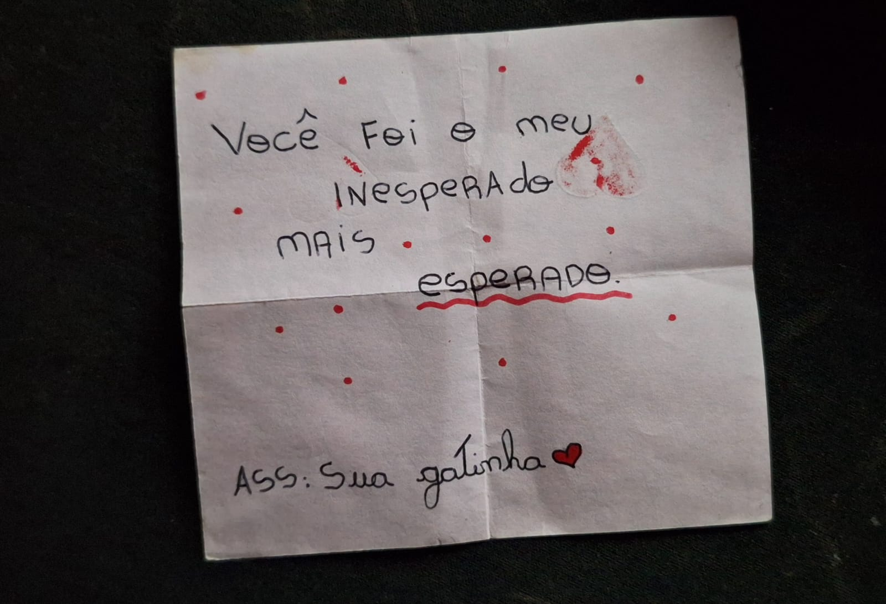

Meu Segredo pra Você, Mariane
💭
Mesmo que as coisas tenham mudado, uma coisa permanece igual: o carinho e o respeito enorme que eu tenho por você. Você é uma pessoa incrível e nossa conexão é algo que eu valorizo muito.
Queria que você soubesse que, independentemente de tudo, sua amizade é muito importante pra mim. Sempre penso em você com muito carinho e torço demais pela sua felicidade.
Desejo de coração que você seja muito feliz, que realize seus sonhos e que Deus cuide de cada detalhe da sua vida. Mesmo de um jeito diferente agora, continuo torcendo por você, sempre.
🌱💚✨
Com carinho,
Adrian
Adrian